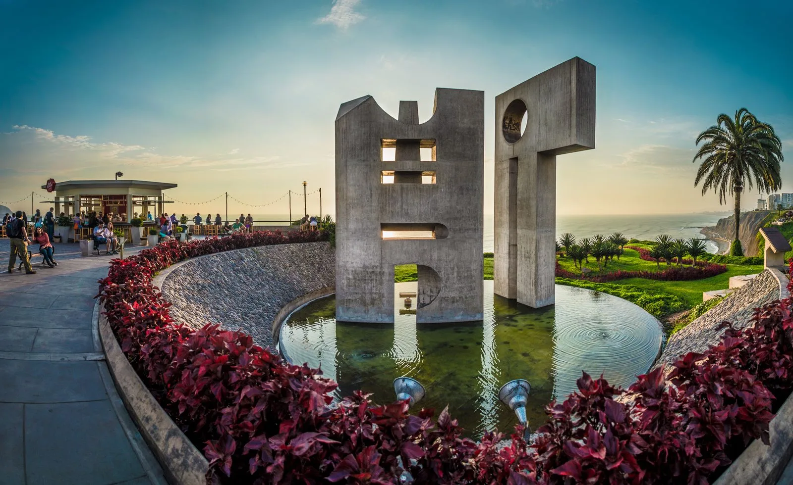
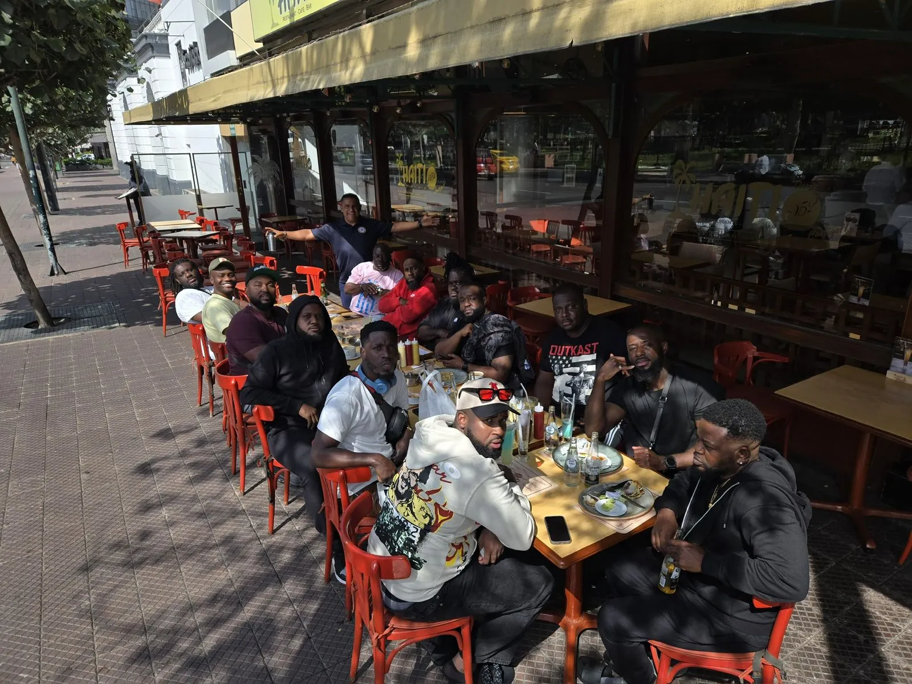

Start smoothly
Coordinate private pickup and arrival support before landing in Lima.
Lima made easier
Airport pickup, private guide days, restaurant reservations, nightlife planning, and group coordination.


Simple and direct
Coordinate private pickup and arrival support before landing in Lima.
Build a flexible day around food, culture, history, neighborhoods, or nightlife.
Use one local contact for transportation, restaurants, nightlife, and coordination.

A real person in Lima
Fidel is the person you speak with on WhatsApp and the local contact helping coordinate your time in Lima.
Start a conversation